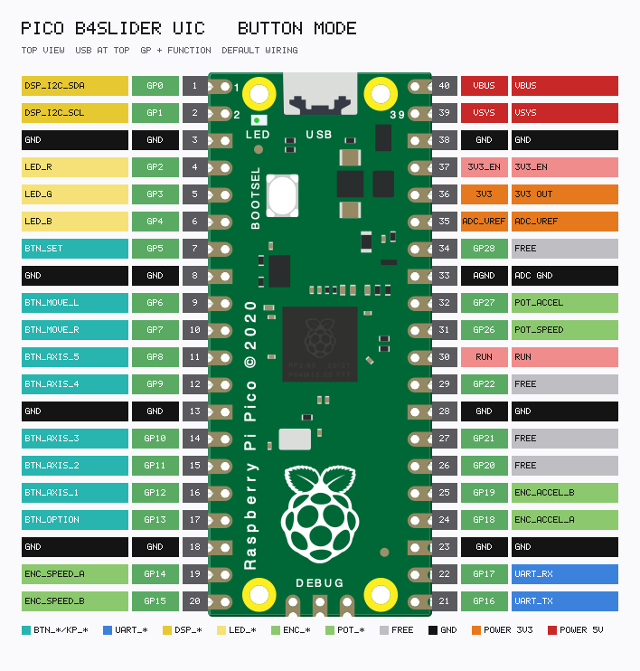

Silk: S SET · < MOVE_L · > MOVE_R · * OPTION · 123 AXIS (recommended plate). Firmware also wires AXIS_4/5. Legal chord: each key ≤ packed getAxisCount(). Invalid = blue blink. Boot = axis 1. OLED Ax 1+5. Unlock: OPTION. Homing: motors only. Shutter: SliderMC CT, not a UIC pin.
| Action | Key | Description |
|---|---|---|
| Hold AXIS keys | 1…5 | Selection = currently pressed; white flash N times |
| Release all AXIS | — | Keep last valid mask |
| Illegal chord | e.g. 5 on 2-axis MC | Blue blink; mask unchanged |
MOVE / SET+MOVE act on the selection. Unselected MT slots are skip _ (time-synced). No AXIS_6 key.
| Action | Key | Description |
|---|---|---|
| (MOVE_L / MOVE_R) tap ≤⅓s | < / > tap | Locked cruise of selection toward that soft end |
| (MOVE_L / MOVE_R) hold >⅓s | < / > hold | Hold-to-run; soft-stop on release |
| Same MOVE tip while locked | < or > tip | Soft-stop cruise |
| Opposite MOVE | < or > | Reverse / retarget other soft end |
| OPTION + (MOVE_L / MOVE_R) | * + < / > | Same as MOVE at panel max speed |
| OPTION hold while moving | * hold | Boost to max speed; release → SPEED |
| SET while moving | S | Soft-stop |
| MOVE_L + MOVE_R | < > | Halt; driver off until any key |
| MOVE_L + MOVE_R hold ≥1s | < > hold ≥1s | Swap left/right |
| All four (L+R+OPTION+SET) | < > * S | Halt + reset like power-up |
Tap vs hold: B4S_MOVE_TAP_MS (333 ms). OPTION before MOVE = max speed + max accel; OPTION during move = speed boost only.
| Action | Key | Description |
|---|---|---|
| SET + MOVE_L tap | S < tap | Set left end here on selected axes |
| SET + MOVE_R tap | S > tap | Set right end here on selected axes |
| SET + MOVE_L hold ≥1s | S < hold ≥1s | Reset L → envelope min (or −2000) |
| SET + MOVE_R hold ≥1s | S > hold ≥1s | Reset R → envelope max (or +2000) |
| SET + L + R hold ≥1s | S < > hold ≥1s | Reset both ends on selection |
Travel only inside the working window. Missing envelope side → ±2000 fallback.
| Action | Key | Description |
|---|---|---|
| SET tap (idle) | S tap | Nothing |
| SET hold ≥1s (idle) | S hold ≥1s | Accel preset L — only if accel is set |
| SET hold ≥3s (idle) | S hold ≥3s | Accel preset H — only if set |
| SET hold ≥5s (idle) | S hold ≥5s | Accel learn from SPEED pot — only if set |
| OPTION + SET tap | * S tap | Disable driver |
| OPTION + SET hold ≥1s | * S hold ≥1s | Toggle loop armed |
| Any key while disabled | — | Re-enable driver |
Loop arm does not start motion; next MOVE cruise ping-pongs until SET / same tip / halt.
| Control | Description |
|---|---|
| SPEED pot / rotary | B4S_SPEED_INPUT pot (default) or rotary. Rotary boot vmax/8; clamp [vmax/128, vmax]; green blink on clamp enter. |
| ACCEL pot / rotary / set | B4S_ACCEL_INPUT. Pico ENC 14/15 + 18/19; Zero ENC 24/25 + 22/23. |
| Colour | Meaning |
|---|---|
| Rainbow | Power-on / unlock |
| Dim white | Idle, ready |
| White ↔ blue | Loop armed (idle) |
| Yellow | Accel / decel |
| Green | Steady speed |
| +30% / 100% blue | Near / at soft end |
| +10% blue | Loop running |
| Dim orange | Driver off |
| Red fast blink | Hard limit |
| Red blink | Homing |
| Red | DRV_ERROR / E-stop |
| White flash ×N | AXIS selection changed (N ≤ 5) |
| Blue blink | Illegal AXIS chord |
| Green blink | Encoder clamp enter |
| White blip | Soft limit set / reset |
| White flash /s | SET hold second counter |
| Violet ×1 / ×2 / ×3 | Accel preset L / H / learn |
| Red flash | Halt / all-four reset |

UART to SliderMC @ 115 200 baud (GP16/17 crossed). AXIS 12/11/10/9/8 · ENC 14/15 and 18/19 · GP22 free. Handshake: UIC \n → MC welcome # … banner.